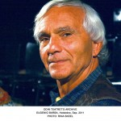

Rabattert dagspass til workshops m/Odin Teatret på Det Norske Teatret - 1-5 dager
- Kategori:
- Tverrfaglige kurs
Tverrfaglige kurs
Åpent for profesjonelle skuespillere og andre profesjonelle deltakere med spesifisert bakgrunn og erfaring. Se søknadsteksten for spesifikasjoner. Legg ved CV. - Dato:
- 26.04.2016 til 30.04.2016
- Start kl :
- 09:00
- Slutt kl :
- 20:00
- Pris:
- 400,-
- Adresse:
- Det norske teatret, Kristian IVs gt. 8, Oslo
{kind=link}
NB! ALLE RABATTERTE DAGSPASS ER UTDELT. SE HER FOR ORDINÆRE BILLETTER OG PROGRAM.
Velkommen til fem fullspekkede dager med Odin Teatret på Det Norske Teatret!
Gå ikke glipp av dette unike og ikke minst historiske evenementet. Det Norske Teatret tar imot Odin Teatret som deler generøst deres arbeid gjennom forestillinger, workshops, masterclasses, filmvisninger og arbeidsdemonstrasjoner. Møt Eugenio Barba og skuespillerne i Odin Teatret på en arena det frie scenekustmiljøet sjelden møtes! Vi byr på store opplevelser og inspirasjon for det profesjonelle scenekunstmiljøet i Norge.
Odin Teatret gjestet Black Box Teatret med forestillingen ”Det Kroniske liv” i forbindelse med teatrets 30-års jubileum i november 2015. Tre utsolgte forestillinger og et sultent publikum - også noen som ikke fikk billett fordi det var fullt!
Odin Teatret er i dag verdens eldste og mest kjente gruppeteater, og er på mange måter gruppeteatrets ”Rolling Stones”. Det ble opprinnelig startet i Oslo i 1964, som de forlot i 1966. Det er på tide å få Odin teatret tilbake til Oslo mens de fortsatt er i virksomhet, sette søkelys på noen av erfaringene fra deres eventyrlige teaterreise både i faglig og kulturpolitisk forstand. Denne uka kan være med på å åpne nye horisonter og samle miljøet gjennom et sterkt faglig program.
{kind=link}
{kind=link}
{kind=link}
{kind=link}
Praktisk info
Skuespillersenterets rabatterte dagspass er utdelt, men det er fortsatt billetter til ordinær pris tilgjengelig gjennom Det Norske Teateret!
Dagspasset dekker programmet den dagen; praktisk masterclass, den påfølgende arbeidsdemonstrasjonen og filmvisning, samt kveldens forestilling.
Skuespillersentret holder deg oppdatert på programmet gjennom vårt nyhetsbrev og våre hjemmesider.
Det er mulig å kjøpe enkeltbilletter til arbeidsdemonstrasjonene på Det Norske Teatret fra 20. januar, hvis man ikke kjøper dagspass.
Kursene/de praktiske masterclassene er for utøvende scenekunstnere, som skuespillere, dansere, figurteatermiljøet ol.
Ta gjerne kontakt med produsent Vibeke Lie for mer informasjon: vibeke@teaterprospero.no eller på telefon 90092739.
PROGRAM
Odin Teatret på Det Norske Teatret 26.-30. April 2016
(forbehold om endringer!)
Tirsdag 26. April
Kl 10.00 - 12.00: Masterclass: “Eugenio Barba og de syv jordskjelv”
Foredrag om utfordrende ledergrep i prosesser med kollektiv skaperkraft. Barba har i løpet av de 50 årene som kunstnerisk leder i Odin Teatret, provosert fram ”jordskjelv” innad i gruppen. Det vil si store omveltninger som har ført til at relasjoner og regler har opphørt og alle måtte finne nye veier for å gå videre, som et skapende menneske og som en del av en gruppen.
Kl 12.15 : “Stillhetens ekko”, arbeidsdemonstrasjon med Julia Varley
- The Echo of Silence is a performance which describes the vicissitudes of the voice of an actor and the strategems she invents to "interpret" a text.
The voice of the actor and the text presented to the spectators compose the music of a performance. In theatre, which seems to be free of the codes we find in music, the actor needs to create a labyrinth of rules, references and resistance to follow or refuse so as to achieve a personal expression and recognize his/her own voice.
Kl 14.00: ”Vilde og gale nordmænd», lansering av ny dokumentarfilm om Odin Teatret av Elsa Kvamme, Alert Film
Kl 20.00: Kveldsforestilling: ”I hvalens skjelett”, ensembleforestilling med Odin Teatret
Onsdag 27. april
Kl 10.00 -12.00: Praktisk Masterclass med Roberta Carreri
The workshop with Roberta Carreri is divided into two parts. The first part concentrates on the actor's physical training - on the awakening of the actor's presence. The second part focuses on vocal work, with exercises that awaken the sonority of the voice and develop the capacity to make vocal actions in space.
The aim of the workshop is to transmit, in a relatively short period of time, the basis of an actor's training that can help young actors to discover their stage presence through the exploration of a formalized stage behavior, and to provide the experienced actors with a way to free themselves of their performing automatism and clichés.
Kl 12.15: “Quasi Orpheus”, arbeidsdemonstrasjon med Jan Ferslev
Quasi Orpheus is a work demonstration in which Jan Ferslev uses examples from training and performances to explain how movement, music, voice and musical instruments are integrated in his work. He shows how a musical instrument can become an extension of the body, thus enhancing its possibilities; how action, voice and sonority merge to suggest different associations and moods; how the visual aspect of an instrument is integrated in the creative process; and finally how all these elements are united in a complex synthesis of expression, which belongs to the performer's personality and turns into the backbone of the performance.
Actor and musician Jan Ferslev has performed with Odin Teatret for more than 25 years. Talabot, Itsi Bitsi, Kaosmos and Mythos are some of the performances he has participated in.
Kl 15.00: ”On the Two Banks of the River”, filmvisning
Kl 16.30- 17.30 ”The Conquest of Difference”, filmvisning
Kl 20.00: Kveldsforestilling: ”Ode til framskritt”, ensembleforestilling med Odin Teatret
Torsdag 28. april
Kl 10.00 -12.00: Praktisk Masterclass med Julia Varley
This masterclass deals with the unity of the physical and vocal impulse, the connection between the singing and speaking voice, and the relationship between text and action. The participants will work individually and in chorus to achieve the characteristic generosity of the voice at the moment when it is offered to the surrounding space.
Kl 12.15: “Nora’s Way”, arbeidsdemonstrasjon med Roberta Carreri
For many years the work of improvisation has been the base of the creation of Odin Teatret performances. In Nora's Way, Roberta Carreri will explain and demonstrate her use of improvisation in the creative process. Then she will confront herself with a classical text: "A Doll's House" of Ibsen. Exploring on stage different ways of creating a sequence of actions and then set them in relation to the text. Alternating the creative work with explanations, she presents her personal process and indicates the motivations behind her choices.
Kl 15.00 ”Theater as Ritual” og ”Odin Teatret in Cuba” filmvisning
Kl 20.00 Kveldsforestilling: ”De store byer under månen”, forestilling med Odin Teatret
Fredag 29. april
Kl 9.00 - 16.00: ”Kunstneren på Stedet - kan scenekunst forandre en by?”
-nordisk kulturpolitisk konferanse, se eget program.
Kl 20.00: Kveldsforestilling: ”De store byer under månen”, forestilling med Odin Teatret
Lørdag 30. april
Kl 10.00-12.00 Praktisk Masterclass med Tage Larsen
This masterclass is based on a dynamic, visual and sound preparation of an actor through physical and vocal training. The training explores and challenges the actors' physical ability, imagination, and capacity to create and mould expressions. The actors learn exercises and then begin to create some of their own. A personal set of actions is linked together to be repeated in various ways, working on space, rhythm, volume, resistance, opposition, colours, humour and so on. Improvisations and compositions are fixed and refined in their physical form and then confronted with a text. The texts are chosen by the participants: something they are eager to explore and transmit. The text will be realized in different ways. Text and action will give and take from each other.
Forestillinger:
Kl 14.00: “Ave Maria”, forestilling med Odin Teatret
Kl 17.30: ”Itsi Bitsi», forestilling med Odin Teatret
Kl 19.00: ”Judith”, forestilling med Odin Teatret
Kl 20.00: Fest!
Om Odin Teatret
{kind=link}
Odin Teatret har i over 50 år blitt ledet av teaterregissøren Eugenio Barba. De har base i Holstebro, en liten provinsby i Danmark, som takket være sin satsning på moderne kunst og kultur, i dag er synonymt med ”kulturbyen.” Eugenio Barba snakker fortsatt norsk som han lærte det til sjøs og på Blindern på 1960-tallet, og regnes sammen med Grotowski, Peter Brook, Ariane Mnouchkine og Dario Fo som en av de store teaterfornyere i moderne tid. Odin teatret turnerer fortsatt over hele verden og deler sitt arbeid gjennom forestillinger, workshops, arbeidsdemonstrasjoner og konferanser.
For mer informasjon om Odin teatret, se www.odinteatret.dk.
I samarbeid med
{kind=link}
{kind=link}
{kind=link}
{kind=link}